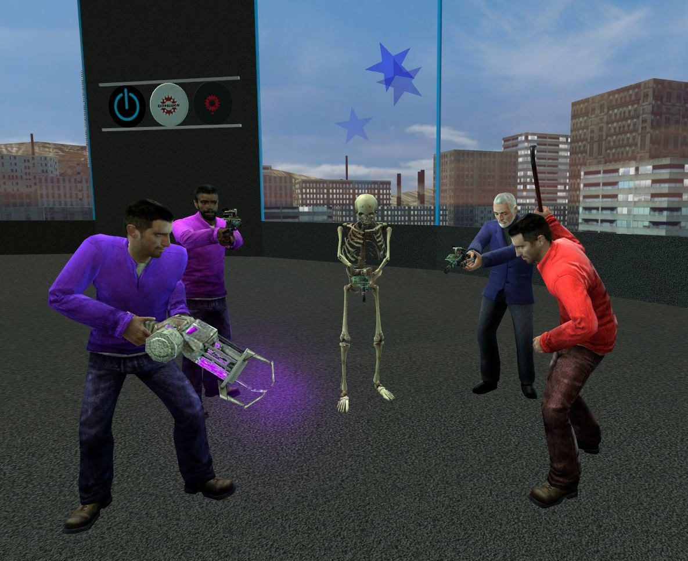

Hi, I'm Fasteroid! Nice to meet you!
Hi, I'm Fasteroid! Nice to meet you!I'm a student pursuing a Bachelor's Degree in Computer Science. I have officially transferred to Wilmington University to pursue both the more practical knowledge its courses will teach me and its unique quarterly course format.
I began writing my first original lines of code early to mid 2014, in a little-known language called Expression 2 from the popular sandbox game Garry's Mod. E2 had a very steep learning curve to it at first due to its obscurity and narrow scope of applications, but by 2015 it had turned into a massive power trip for me and I was hooked. Nowadays I'm severely burned out on the language, but still plenty capable of assisting others with it.
Due to the experiment-and-observe process of how I taught myself E2, I've gotten pretty good at reverse-engineering unfamiliar code. I'm not good enough to deobfuscate code yet, but I have written some inspector tools for browser developer consoles that let me really dig into what websites are doing. Let's just say I've seen some things that the respective web developers would have preferred I not see.
 My biggest real life achievements have been those in Odyssey of the Mind, which is a collaborative
problem-solving extracurricular for creative thinkers. Each year, teams of 5-7 choose
one of five long-term problems (which all involve some combination of acting and engineering),
and are assigned an 8-minute 'spontaneous' problem the day of the performance.
My biggest real life achievements have been those in Odyssey of the Mind, which is a collaborative
problem-solving extracurricular for creative thinkers. Each year, teams of 5-7 choose
one of five long-term problems (which all involve some combination of acting and engineering),
and are assigned an 8-minute 'spontaneous' problem the day of the performance.With the help of my father as the team coach (who's just there to organize and keep us on track), and my wonderful teammates, we managed a World Finalist status four times in a row from 2016 to 2019, with a second place victory for Problem 2 Division III in 2019 (scores here).
Odyssey of the Mind taught me a lot—mainly that it usually isn't feasable for one person to work on everything. Different people have different strengths and weaknesses, and if one person does everything, they're bound to hit a weakness eventually. In contrast, with good teamwork and good skill coverage, even an intelligent adversary will struggle to pick something that truly defeats everyone on the team.

I currently spend my days running my Garry's Mod server, E2 Beyond Infinity. It's a programming and
scripting paradise I originally started due the Expression 2 limitations on most other servers. Now it's more
or less a hangout place for me and a few friends, but we still do get the occasional new recruits now and then.
One of the coolest features of the server is the bidirectional Discord Relay I designed, which allows seamless two-way interaction between players on the Garry's Mod server and users in its Discord server. This relay has proved to serve many practical applications, ranging from posting memes in the in-game chat to running commands remotely 8000 from miles away. This is but one component of the whole system, however. It would be useless without friends to share it with.
As of recently, I've actually gotten enough money via server donations from said friends to build my own server box, which I'll be doing as soon as the parts arrive. I'd call that a business success, wouldn't you?
That's just a quick summary of my unique achievements in life. If you want specifics as to what I have to offer, go check out the skill tree for more information.
—Fast
One of the coolest features of the server is the bidirectional Discord Relay I designed, which allows seamless two-way interaction between players on the Garry's Mod server and users in its Discord server. This relay has proved to serve many practical applications, ranging from posting memes in the in-game chat to running commands remotely 8000 from miles away. This is but one component of the whole system, however. It would be useless without friends to share it with.
As of recently, I've actually gotten enough money via server donations from said friends to build my own server box, which I'll be doing as soon as the parts arrive. I'd call that a business success, wouldn't you?
That's just a quick summary of my unique achievements in life. If you want specifics as to what I have to offer, go check out the skill tree for more information.